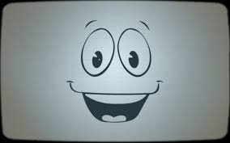

DISCLAIMER: This website is designed to bring a positive twist to a real problem. most of this website is fiction, but the statistics are true. I made this website in a non-seriouse matter because this issue isn't nearly as bad as many others, but will still become an issue if not taken care of. Also, this website is set in a future where 90% of tech users have become so enraptured in technology that they forgot about the world around them, and let it crumble. don't question the specifics, like why do phones work but there is no electricity, it's just a joke. The website is from the point of view of a young man talking to a robot in a resistance HQ. Enjoy!
Oh! Hello there. You must be the newest member of our resistance. Resistance against what you may be wondering? Well, the machines of course! You seem to have amnesia, or some other convenient plot device, so let me explain what's going on here.
A long time ago, in 1876, phones were created so that people could talk over long distances, and man were they great. After a little spit and polish, and some time later, everybody had one! And it didn't stop there. Phones started to take on more abilities, like play music, show the person you are talking to and even talk back when you ask questions. Amazing!
But of course, that's when they started getting smart, they were controlling people without them even knowing. People started quickly throwing away their lives staring into these amazing little boxes and missing the things around them. Kids too! They had their childhoods brutally taken away from them, spending more time texting and watching silly videos then actually exploring the world and smelling the roses.
The invasion was slow at first, starting with phones and computers, taking everybody's attention out of the sky. Then the drones and VR hit and we knew that we had lost them. People started to change, they were talking in weird languages, saying things like "LOL" and always talking about memes. The few sensible humans who were left started dying of old age and most of the rest became... the techies!
The techies are mindless wanders who never stop texting. They never look up from their phones, or spend all of their time on computers. When you try to disturb them they get angry and start saying things like "O-M-G, can you believe this guy, did he, like, really just do that!""
But all that aside, it is time for your assignment, if you choose to accept it. Together, with the resistance, we will teach the techies about the world around them and open their eyes to what life was like before technology. Of course because of your extremely inconvenient amnesia, I'm going to tell you all about how The Humans Dependence On Technology Had Become Problematic To The Social Conditions And Health Of Humans!